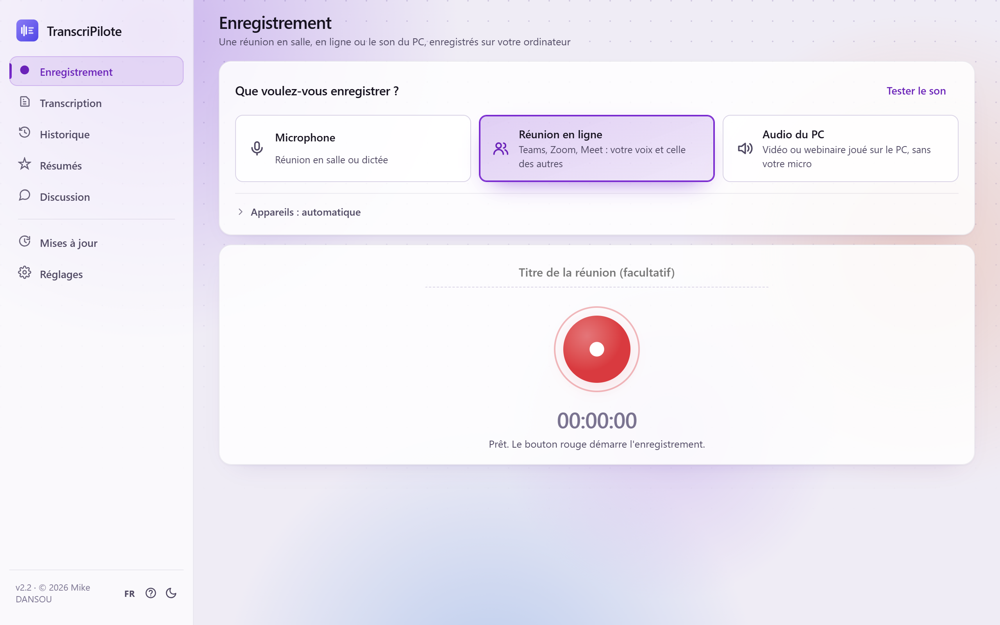
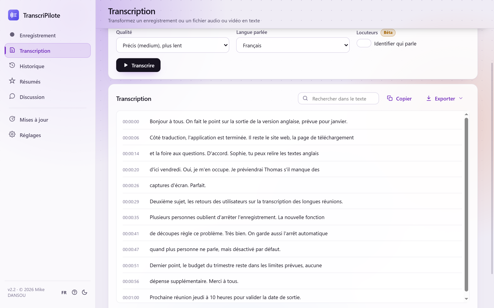
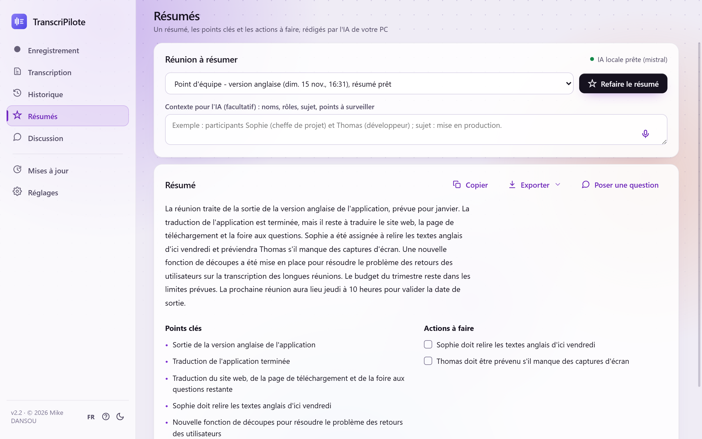
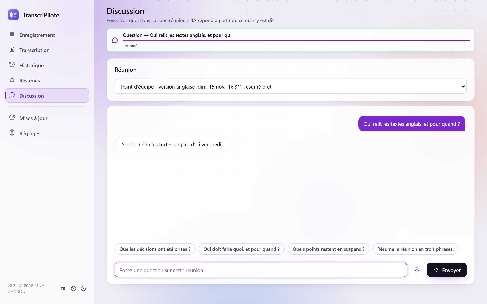
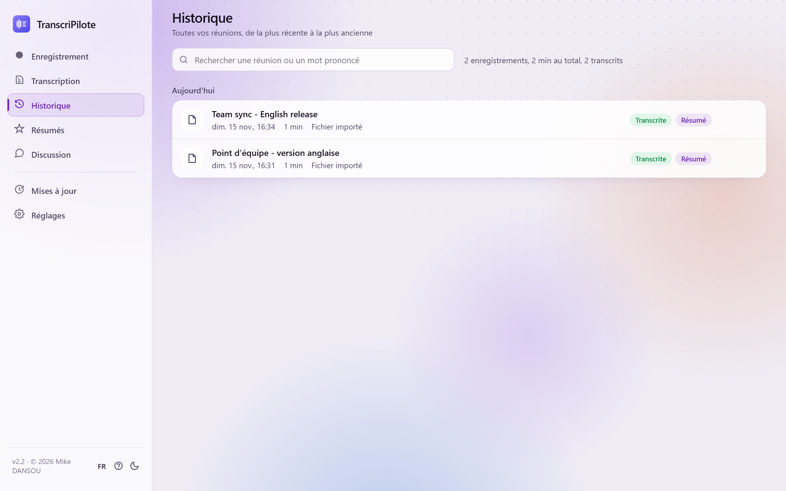
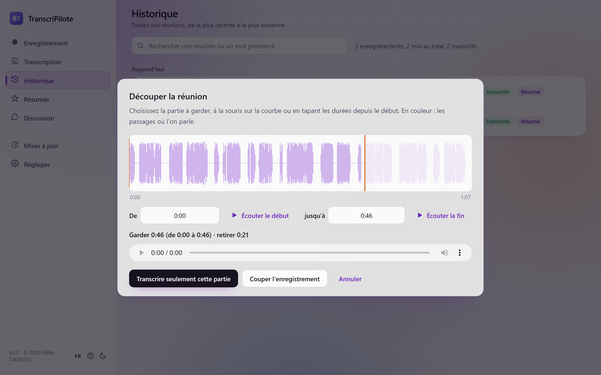

Captures d'écran
TranscriPilote tel qu'il s'affiche sur votre PC, en taille réelle. Cliquez sur une image pour l'ouvrir seule.
Enregistrement
Le choix de la source : micro, réunion en ligne ou son du PC.


Transcription
Une réunion transcrite, horodatée phrase par phrase.


Résumé
Le résumé, les points clés et les actions à faire, rédigés par l'IA de votre PC.


Discussion
Une question posée à la réunion, et la réponse.


Historique
Toutes les réunions, avec la recherche dans les transcriptions.


Découper une réunion
Garder seulement la partie utile d'un enregistrement trop long.

